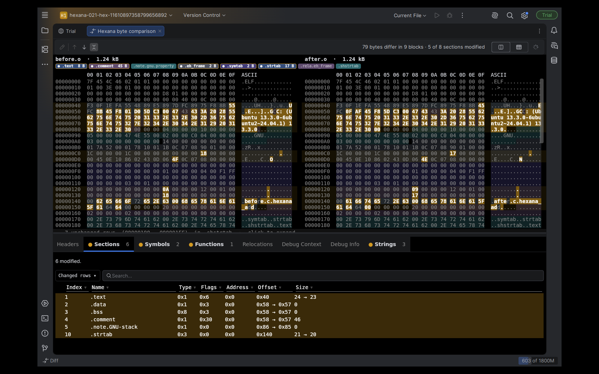
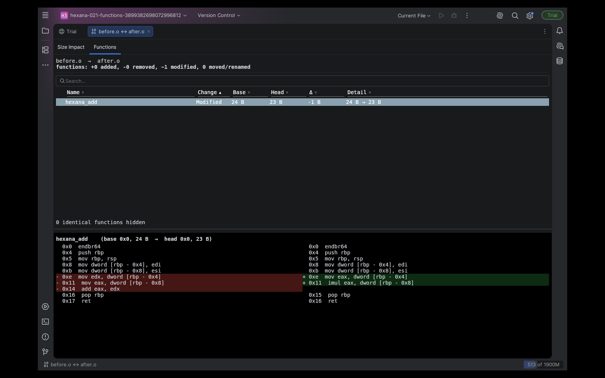
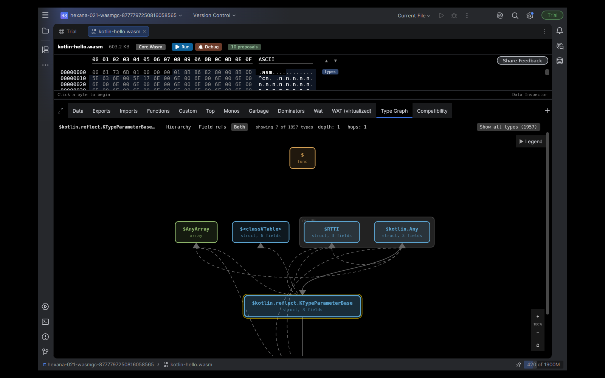

Hexana update
What's New in Hexana 0.21
Hexana 0.21 focuses on Binary diff, Native binaries, and WebAssembly while refining binary inspection inside JetBrains IDEs.
Binary diff
See binary changes byte by byte
Compare binaries in the IDE diff window with highlighted bytes, expandable unchanged regions, paired sections, and table-level changes.
- Hex diff in the IDE's own diff window. Comparing two binaries with the platform Compare Files (or viewing a binary's VCS change) now shows a side-by-side hex view with changed bytes highlighted and long unchanged stretches collapsed into expandable "N unchanged rows" folds, plus previous / next difference navigation. Sections are tinted in colors that never clash with the diff's own, and one section bar for both sides pairs sections by name and marks which changed and by how much.
- One diff editor for every format: WASM module, Component Model and native comparisons share the same tab strip, tables (now searchable and sortable) and side-by-side detail pane.
- Compare WASM With… and Compare Binary With… are merged into one Compare Binaries With… action (Hexana context menu, Find Action) that picks the comparison from the files' contents. It is offered for any WASM or native binary Hexana recognizes by content, including extensionless executables and modules, rather than for a fixed list of extensions.

Native binaries
Compare native functions
See which functions changed between ELF, Mach-O, or COFF builds, then compare their disassembly side by side. PE images and archives keep section-size comparison.
- Per-function native binary diff. Comparing two ELF, Mach-O or COFF files adds a Functions tab next to Size Impact: functions are paired by name, renames are recognized by identical code, and a function that only moved because the code before it grew is reported as moved rather than modified. Selecting a function shows its disassembly side by side, with shifted addresses ignored when lining up instructions.

WebAssembly
Explore WasmGC type relationships
Explore subtype and field-reference relationships in an interactive type graph, and jump back to the corresponding WAT type.
- WasmGC type graph in the WAT (virtualized) tab. For WasmGC modules every type in the type section gets inline annotations showing its kind and fields.

Also in 0.21
- Run checks and script suites Define named checks and typed flags, run script suites in the IDE test console, and navigate findings in the Problems tab.
- Open binaries by content Open Arrow IPC streams and recognized extensionless binaries directly in their format-specific views.
- More responsive, bounded inspection Apply analytics consent changes immediately, process large native symbol tables faster, and refuse gzip payloads over 128 MiB inflated.